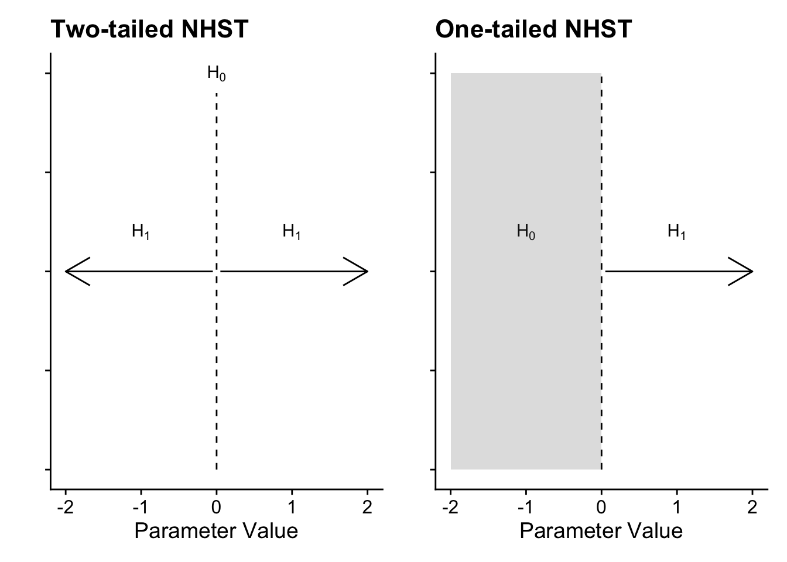
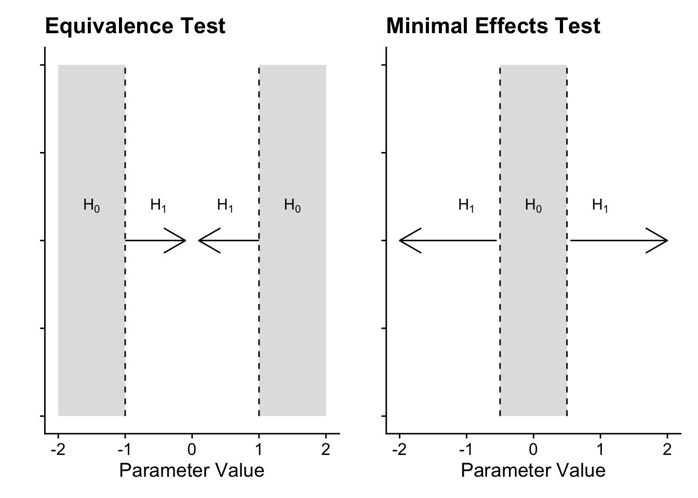
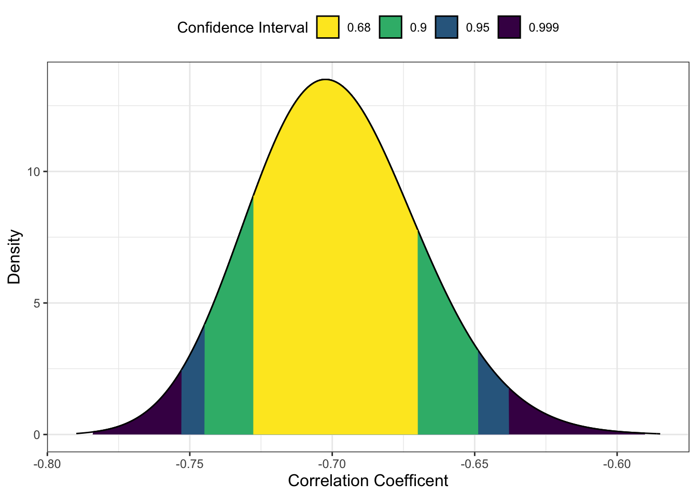
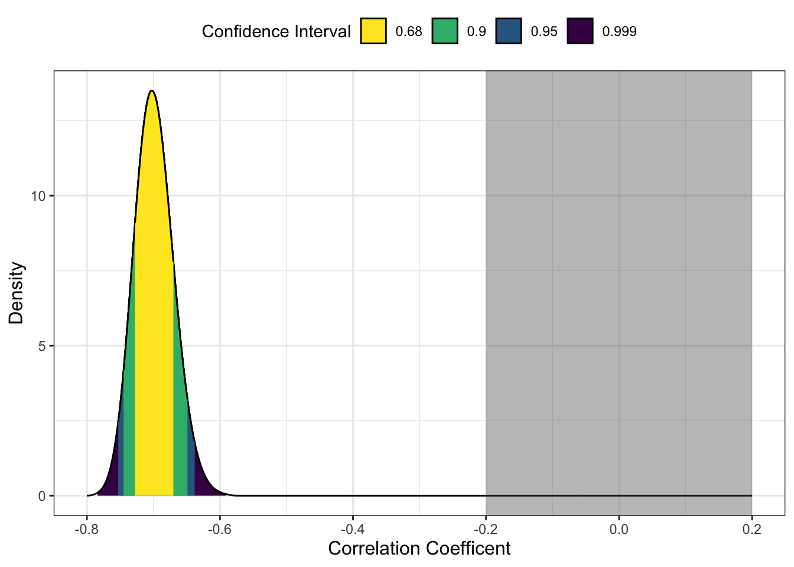
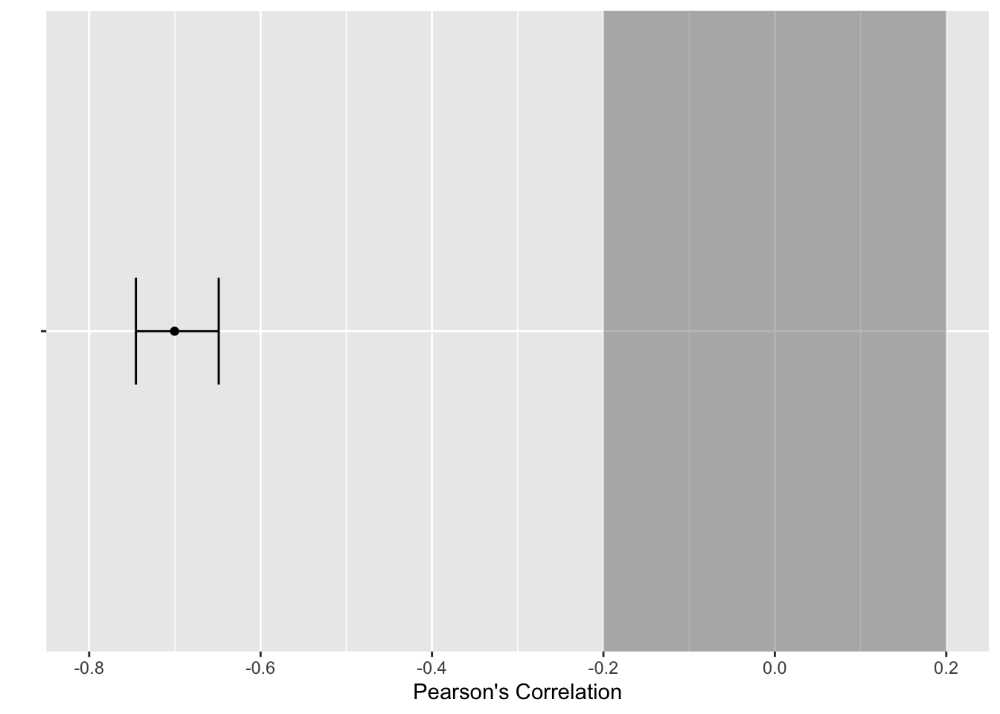

library(tidyverse)
library(correlation)
library(effectsize)
library(TOSTER)
# Read the Dawtry_2015_clean.csv file
dawtry_clean <- read_csv("data/Dawtry_2015_clean.csv")
# Read the Lopez_2023.csv file
lopez_data <- read_csv("data/Lopez_2023.csv")
# recode condition
lopez_clean <- lopez_data %>%
mutate(Condition_label = case_match(Condition,
0 ~ "Control",
1 ~ "Experimental"))Appendix C — Equivalence Testing
In this bonus chapter, you will learn how to apply equivalence testing. In Chapters 8 and 9, you learnt about different inferential statistics but they all rely on the traditional null hypothesis significance testing framework of rejecting a null value of zero. The limitations of this approach is that you can only ever test to reject the null, not test for the null, or more precisely for effect sizes within a set of boundaries. In this chapter, you will learn how to use the
Chapter Intended Learning Outcomes (ILOs)
By the end of this chapter, you will be able to:
Justify your equivalence boundaries for your smallest effect size of interest.
Apply equivalence testing to designs requiring a correlation.
Apply equivalence testing to designs requiring a t-test.
C.1 Chapter preparation
C.1.1 Organising your files and project for the chapter
For this chapter, we are going to revisit the data sets you worked with in Chapters 8 (Dawtry et al., 2015) and 9 (Lopez et al., 2023). Before we can get started, you need to organise your files and project for the chapter, so your working directory is in order.
In your folder for research methods and the book
ResearchMethods1_2/Quant_Fundamentals, create a new folder calledEquivalence_testing. WithinEquivalence_testing, create two new folders calleddataandfigures.Create an R Project for
Equivalence_testingas an existing directory for your chapter folder. This should now be your working directory.Create a new R Markdown document and give it a sensible title describing the chapter, such as
Equivalence Testing. Delete everything below line 10 so you have a blank file to work with and save the file in yourEquivalence_testingfolder.The Dawtry et al. (2015) data wrangling steps were quite long, so please save this clean version of the data to focus on screening data in this chapter: Dawtry_2015_clean.csv. You will also need to save the data from Lopez et al. (2023) if you have not downloaded it yet: Lopez_2023.csv. Right click the link and select “save link as”, or clicking the link will save the files to your Downloads. Make sure that you save the files as “.csv”. Save or copy the files to your
data/folder withinEquivalence_testing.
To prepare for the activities, read and process the two key data files. You will also need to install the
You are now ready to start working on the chapter!
C.2 The logic behind equivalence testing
The standard approach to inferential statistics using frequentist probability is trying to reject a point-null value of zero, applied to whatever parameter you are interested in. In a t-test, this is a mean difference of zero as your test statistic/value. In a correlation, it is a correlation coefficient of zero as your test statistic/value. The p-value in the test represents the probability of observing the data, assuming that the null (that point-null value of zero) is true. You are always trying to reject the null hypothesis and indirectly accept the alternative hypothesis, but importantly you can never accept the null. Visually, it looks something like this:

In a two-tailed test, the null is precisely zero and you are trying to reject it in favour of the alternative hypothesis which can be any positive or negative value. In a one-tailed test, it follows the same logic, but instead of precisely zero, the null is the entire positive or negative region, meaning you want to reject values above or below zero depending which direction you predict. For many research questions, this logic holds to test for the presence of an effect by rejecting the null hypothesis. However, what about if your research question / prediction is interested in testing the null itself or a lack of effect? Unfortunately, you cannot test for the effect being precisely zero but you can use the procedure to test for effects too small to be practically or theoretically meaningful.
Equivalence testing (Harms & Lakens, 2018; Lakens et al., 2018, 2020) flips the null hypothesis significance testing logic. In this setup, you set two boundaries representing your smallest effect size of interest (SESOI) and conduct two one-sided tests: one comparing your test statistic/value to the upper bound and one comparing your test statistic/value to the lower bound. If both tests are statistically significant, you can conclude the mean was within your bounds and it is practically equivalent to zero.
This procedure is usually referred to by the single name of equivalence testing, but you can apply it in two ways depending on your research question. In an equivalence test, you want to test whether your test statistic/value is smaller than your boundaries, i.e., you want to test for the absence of an effect. Conversely, in a minimal effects test you want to test whether your statistic/value is larger than your boundaries, i.e., you want to test for an effect exceeding your SESOI.

In an equivalence test, the null hypothesis is split into two regions representing your SESOI. The two one-sided tests compare your test statistic/value to calculate whether it is significantly lower than the upper bound and significantly higher than the upper bound. If both tests are significant, you conclude it is statistically equivalent, given the boundaries you set. Conversely, a minimal effects test flips this procedure. Instead of a point-null in NHST, the null hypothesis is a region of effects representing your SESOI. The two one-sided tests calculate whether your test statistic/value is significantly lower than the lower bound and significantly higher than the higher bound. You are looking for the tests to be statistically significant to test the null region.
Justifying your equivalence/minimal effects bounds is probably the most difficult decision you will make as it requires subject knowledge for what you would consider the smallest effect size of interest. For a non-exhaustive list, there are different strategies like:
Your understanding of the applications / mechanisms (e.g., a clinically meaningful decrease in pain).
Smallest effects from previous research (e.g., lower bound of individual study effect sizes or lower bound of a meta-analysis).
Small telescopes (the effect size the original study had 33% power to detect).
C.3 Correlations
To apply the procedure to correlations, we will use the Dawtry et al. (2015) data and the relationship between support for wealth redistribution and perceived fairness and satisfaction in the current system. For a starting point, we need to calculate the correlation coefficient as standard.
| Parameter1 | Parameter2 | r | CI | CI_low | CI_high | t | df_error | p | Method | n_Obs |
|---|---|---|---|---|---|---|---|---|---|---|
| fairness_satisfaction | redistribution | -0.70034 | 0.95 | -0.7533907 | -0.6382316 | -17.07843 | 303 | 0 | Pearson correlation | 305 |
C.3.1 Equivalence testing
For the first demonstration, we will conduct an equivalence test using the correlation coefficient we observed. The idea behind this function is that you can apply the procedure when you only have summary statistics and you do not need the raw data. In the corsum_test() function, we need to define:
r- The observed correlation coefficient.n- The number of observation pairs, i.e., the sample size.alternative- The hypothesis to test, including options like “equivalence” and “minimal.effect”.method- The type of correlation to calculate, including options like “pearson” and “spearman”.null- The null hypothesis or region to test against. If you provide a single value, it will test against symmetrical values, i.e., 0.2 will test against -0.2 and 0.2. If you want to specify asymmetrical values, you must enter a vector of numbers likec(0, 0.2).
To apply this procedure to the correlation example, we can enter -0.70 for the Pearson correlation coefficient and 305 participants. The equivalence bounds is the hardest argument to set here, so we will use 0.2 as there is an idea called the “crud factor” where correlations smaller than 0.2 are likely noise (although Orben & Lakens (2020) critique this somewhat).
Pearson's product-moment correlation
data: x and y
z = -11.549, N = 305, p-value = 1
alternative hypothesis: equivalence
null values:
correlation correlation
0.2 -0.2
90 percent confidence interval:
-0.7451459 -0.6484676
sample estimates:
cor
-0.7 In this example, the p-value of the equivalence test is 1 which might sound strange, but we need to think of the procedure here. Remember in an equivalence test we want to test whether the test statistic is smaller than the boundaries. In this scenario, the observed test statistic is r = -0.70 (90% CI = [-0.75, -0.65]). The correlation is pretty large and beyond the lower bound of -0.2, so it is entirely within that null region.
NoteWhy is it a 90% CI?
One detail you might have noticed is that we use a 90% confidence interval instead of the standard 95%. If we want to maintain the standard alpha rate at 5%, a 90% confidence interval over two tests maintains the alpha rate at 5%.
C.3.2 Minimal effects testing
For this scenario, it would be more aligned with a minimal effects test as we want to calculate whether our effect exceeds our SESOI. This time, we will set the alternative argument as "minimal.effect".
Pearson's product-moment correlation
data: x and y
z = -11.549, N = 305, p-value < 2.2e-16
alternative hypothesis: minimal.effect
null values:
correlation correlation
0.2 -0.2
90 percent confidence interval:
-0.7451459 -0.6484676
sample estimates:
cor
-0.7 This time, it is statistically significant as our observed correlation coefficient is significantly lower than our lower bound of -0.2. This means we can conclude the effect size exceeds our minimal effects test.
C.3.3 Plotting the tests
To help communicate your findings, or just help contextualise things for you, we can plot the results of these tests using one of two methods. First, the
The first step is saving the plot object using the same values as we used for the equivalence test.

The default arguments here visualise the observed correlation coefficient with a range of confidence intervals. We can then add

Alternatively, if you wanted a more minimalist look or you wanted to plot the results of multiple correlations, we can create our own version. The first step is saving the results of a correlation() object, specifying we want the 90% confidence interval.
This provides us with a data frame containing one row. This means we can take the results and feed it into
save_correlation %>%
ggplot(aes(y = r, x = "")) + # leave x blank
geom_point() + # correlation estimate
geom_errorbar(aes(ymin = CI_low, # 90% CI around r
ymax = CI_high),
width = 0.2) +
labs(x = "",
y = "Pearson's Correlation") +
coord_flip() + # flip x and y axes
scale_y_continuous(limits = c(-0.8, 0.2),
breaks = seq(-0.8, 0.2, 0.2)) +
annotate(geom = "rect", # add the box for the SESOI
ymin = -0.2, ymax = 0.2,
xmin = I(0), xmax = I(100),
alpha = 0.4)
C.4 t-tests
To apply the procedure to t-tests, we will use the Lopez et al. (2023) data and the difference in calories consumed between accurate and inaccurate visual cues.
C.4.1 Equivalence testing
There are two ways you can apply the equivalence testing procedure for t-tests. We are focusing on two groups here, but the function also works for paired samples and one-sample t-tests. We will start with the t_TOST() function which starts with similar arguments to the standard t.test() function:
formula- For two groups, we can use the standardoutcome ~ predictorformat. If you have paired samples or one-sample, you can use thexandyarguments.data- The data frame you are using.eqb- The equivalence bounds you want to set. If you enter one number, it will create symmetrical bounds, such as -20 to 20. If you want asymmetrical bound, you would need to enter a vector of numbers.eqbound_type- The default option is to enter “raw” units, so whatever scale your outcome is on. For our example, this will be in calories. Your other option is “smd” for standardised mean difference, or Cohen’s d. You can enter the equivalence bounds as standardised units but it comes with a little warning that there is potential bias.hypothesis- This is where you can create an equivalence test using “EQU” or a minimal effects test using “MET”. We will come back to minimal effects in the next section.
The main argument to explain here is using 57 calories for the equivalence bounds. Remember this is a t-test, so we want to see whether one group is larger (or smaller) than the other. Setting the equivalence bounds is the single most difficult part here but Lopez et al. (2023) explain that they were interested in detecting an effect at least half as large as the original Wansink et al. study. Therefore, in an equivalence test, we would ask the question whether the observed effect size is smaller than 57 calories difference.
Welch Two Sample t-test
The equivalence test was non-significant, t(453.45) = -0.47, p = 0.68
The null hypothesis test was significant, t(453.45) = -4.86, p < 0.01
NHST: reject null significance hypothesis that the effect is equal to zero
TOST: don't reject null equivalence hypothesis
TOST Results
t df p.value
t-test -4.8578 453.4 < 0.001
TOST Lower -0.4661 453.4 0.679
TOST Upper -9.2495 453.4 < 0.001
Effect Sizes
Estimate SE C.I. Conf. Level
Raw -63.0495 12.97908 [-84.4419, -41.6571] 0.9
Hedges's g(av) -0.4513 0.09445 [-0.6059, -0.2963] 0.9
Note: SMD confidence intervals are an approximation. See vignette("SMD_calcs").The output is busier than correlations, so we will walk through the three sections. The first explains the summary of the equivalence tests. You get both the equivalence test and a traditional t-test. Here, the traditional t-test is significant (we can reject 0) but the equivalence test is non-significant, meaning we cannot conclude the effect was statistically equivalent, given our bounds.
The second section adds context to this as you see the output for all three tests. The t-test is significant to reject zero. We then have the two one-sided tests where one is significant (we can reject the upper bound), but the other is non-significant. Both need to be significant to conclude equivalence.
Finally, we have a summary of the effect sizes. You get the raw / unstandardised effect size and it’s 90% CI. For our equivalence bounds of -57 to 57, the upper bound of the 90% CI (-41.66) extends into the equivalence bounds, so that’s why the test is non-significant. You also get Hedge’s g as a standardised effect size.
Briefly, there is a second, more minimalist function to calculate the equivalence test called simple_htest(). This is supposed to look closer to the output from a traditional t-test but the conclusion is the same. You just get one test (the smaller of the two one-sided tests) and a summary of the boundaries.
Welch Two Sample t-test
data: F_CaloriesConsumed by Condition_label
t = -0.4661, df = 453.45, p-value = 0.6793
alternative hypothesis: equivalence
null values:
difference in means difference in means
-57 57
90 percent confidence interval:
-84.44188 -41.65710
sample estimates:
mean of x mean of y
196.6818 259.7313 C.4.2 Minimal effects testing
For the framing of Lopez et al. (2023), it potentially makes more sense to calculate a minimal effects test if we are interested in the effect being at least as large as half the original effect size. In other words, we want to see whether the effect is 57 calories or greater, rather than smaller than 57 calories.
Welch Two Sample t-test
The minimal effect test was non-significant, t(453.45) = -9.2, p = 0.32
The null hypothesis test was significant, t(453.45) = -4.86, p < 0.01
NHST: reject null significance hypothesis that the effect is equal to zero
TOST: don't reject null MET hypothesis
TOST Results
t df p.value
t-test -4.8578 453.4 < 0.001
TOST Lower -0.4661 453.4 0.321
TOST Upper -9.2495 453.4 1
Effect Sizes
Estimate SE C.I. Conf. Level
Raw -63.0495 12.97908 [-84.4419, -41.6571] 0.9
Hedges's g(av) -0.4513 0.09445 [-0.6059, -0.2963] 0.9
Note: SMD confidence intervals are an approximation. See vignette("SMD_calcs").In changing the hypothesis argument to “MET”, we still get all the same output but the framing changes. Instead of testing whether the observed effect is within the equivalence bounds, we test whether the effect is outwith the equivalence bounds. We get a similar conclusion here where the traditional t-test is significant and we can reject the point null of zero. However, the minimal effects test is non-significant and our effect does not exceed the bounds.
C.4.3 Plotting the tests
The plotting options are also a little nicer here as there are built-in visualisations for equivalence tests. First, we need to save the initial test object.
We can then pass the object to plot() to create different types of visualisation. The first is a simple dot-and-whisker plot we created ourselves for the correlation.
The second is a density plot like we saw for correlations, but this time the equivalence bounds are added automatically.
Both visualisations reinforce the conclusion that we have a traditionally significant result where we can reject a point-null, but the effect estimate and it’s precision through the 90% CI does not exceed the equivalence bounds we set.